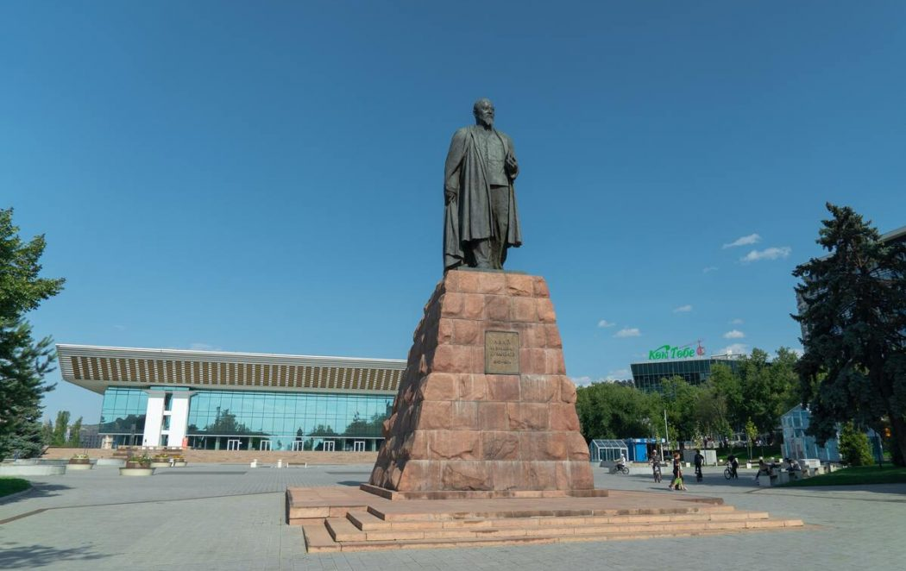

Ж.А. Ташенов активно занимался проблемой обустройства оралманов. 14 октября 1955 г. Ж.А. Ташенов как Председатель Президиума Верховного Совета республики обратился с письмом к секретарю ЦК Компартии Казахстана И.Д. Яковлеву с просьбой рассмотреть вопросы улучшения быта репатриантов из Китайской Народной Республики.
Работа Ж.А. Ташенова на высших постах в республике совпала с периодом реабилитации невинно осужденных в годы сталинщины. Как председатель Комиссии Ж.А. Ташенов многое сделал не только в деле реабилитации осужденных, но и в обеспечении жильем семей репрессированных, детей, у которых погибли в лагерях родители. Так, например, были построены дома для этих семей, в которых получила квартиру вдова Магжана Жумабаева – Зылиха и другие лица.
При его непосредственном участии были переизданы и увидели свет произведения Сакена Сейфуллина, Беимбета Майлина, Ильяса Жансугурова и других лиц, попавших под жернова сталинских репрессий.
Особо трепетное отношение Ж.А. Ташенов испытывал к фронтовикам, участникам Великой Отечественной войны. Как показывают свидетели, Ж.А. Ташенов неоднократно ставил вопросы присуждения звания Героя Советского Союза Бауыржану Момышулы, Рахимжану Кошкарбаеву. Он заботился о тех, кто вернулся с войны. Ж.А. Ташенов также помог и герою войны Сагадату Нурмагамбетову, ставшему позже генералом и первым Министром обороны независимого Казахстана [11, с. 320-321].
В 1960 году Ж.А. Ташенев, заняв должность Председателя Совета Министров Казахской ССР, полностью отдал деятелям культуры и искусства 212-квартирный большой дом, построенный по новой технологии. До сих пор этот дом, располагающися в настоящее время в г. Алматы на пересечении улиц Кунаева и Кабанбай батыра, называют «казахским аулом» или «домом Ташенева».
Среди выдающихся деятелей, переселившихся в этот дом, были Ильяс Омаров, Бибигуль Тулегенова, Гульфайруз Исмаилова, Каукен Кенжетаев и Шабал Бейсекова, Жамал Омарова, Сейфолла Телгараев, Курманбек и Шолпан Жандарбековы, Шара Жиенкулова, Капан Бадыров, Жусупбек и Хабиба Елебеков, писатели Хамза Есенжанов, Зеин Шашкин, Жусуп Алтайбаев, Балгабек Кыдырбекулы, ученый Абди Турсынбаев и др.
Просторный проспект в центре Алматы, тянущийся на 12 км с запада на восток, был назван проспектом Абая по рекомендации Ж.А. Ташенева. Именно он перерезал ленту на торжественном открытии памятника Абаю перед современным Дворцом Республики. Для реализации этого дела он сказал следующее: «В центре столицы Казахстана нет другой казахской улицы кроме улиц имени Джамбула и Амангельды. Поэтому, чтобы устранить эту несправедливость, нам необходимо назвать в честь Абая улицу в центре города, а на ней установить большой памятник Абаю. Мы не хуже других. Мы не должны отставать от других. Посмотрите, в Тбилиси есть улица Шота Руставели, которая тянется через весь город. Такой проспект возводится и в Ташкенте. Это проспект Алишер Навои. В конечном счете, Алишер Навои не жил не только в Ташкенте, но и в Узбекистане. Всю жизнь он провел в городе Герате в Афганистане. Одна из главных улиц Москвы носит имя Максима Горького» [3, с. 17–18]. Слова Ж.А. Ташенева не расходились с делом, и он сам следил за созданием памятника Абаю. Автором этого памятника Абаю стал известный скульптор Хакимжан Наурызбаев.
Кроме того в 1958 году, когда Ж.Ташенов возглавил делегацию Казахской ССР в Москву для участия в Днях искусства и литературы, благодаря его усилиям 5 представителям Казахстана было присвоено звание «народный артист СССР». Также благодаря усилиям Ж.Ташенова роман Мухтара Ауэзова «Путь Абая» был представлен на Ленинскую премию, и был опубликован роман Бауыжана Момышулы «За нами Москва».
Несмотря на проводимую Москвой политику кадровой дискриминации, Ж.Ташенов принял на работу в аппарат Правительства 12 представителей коренной национальности – казахов. Также одним из первых он выступил против проведения ядерных взрывов на казахской земле.


Памятник Абаю Кунанбаеву, установленный Жумабеком Ташеновым